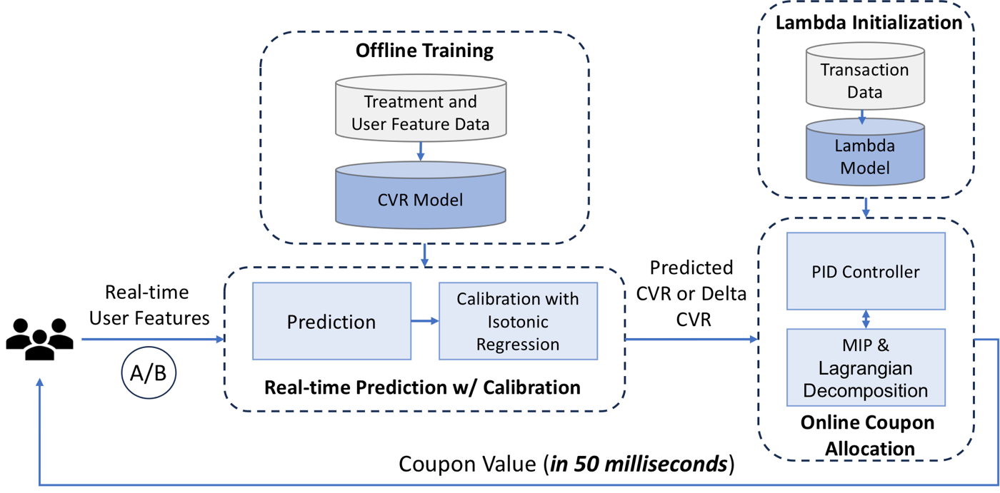
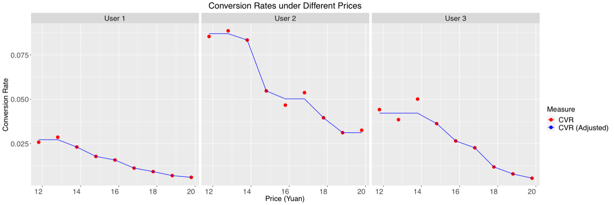
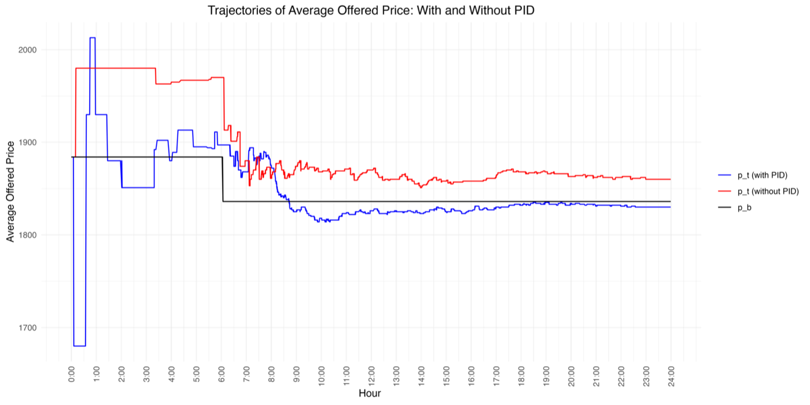

- 1 人 50 ミリ秒以内来訪した顧客 1 人ごとに、数段階の額を \(v_{ij}-\lambda\hat q_{ij}(p_b-p_j)\) に入れて比べるだけで額が決まる。全員分の額を前日に保存しておく必要がない。
- 83.42 秒 → 0.28 秒約 633 万人の都市 C を 2,029 グループにまとめて解いた時間。従来の整数計画と LDM-IR の目的関数値はほぼ同じだった（Table 3）。
- 売上 +2.8%都市 B の A/B テストで、露出ユーザー 1 人あたりの月額プランの売上を従来の Offline-IP と比べた値（Table 5）。論文は露出ユーザー 1 億人あたり月 600 万元の増収に当たるとしている。
前日にまとめて決めた額を配る方式では、来訪の予測が外れると予算からずれ、顧客をグループにまとめた分だけ最適からも離れる
Meituan Bike はシェアサイクルの利用者に週・月・四半期の定額プランを販売している。多くの都市で売上の 9 割超を占める月額プランについて、販促期間中に数千万人へ割引クーポンを配る。論文が扱うのは、この 1 商品についての額の決め方である。
従来の Offline-IP は XGBoost などで顧客ごとの来訪確率と額ごとの購買率（CVR）を予測し、整数計画で翌日の額を決めて保存しておく。論文はこの方式の欠点を 3 つ挙げる。当日 \(T\) の額を前日 \(T-1\) に決めるので当日の情報を使えず、来訪の予測誤差で予算を超えたり最適からずれたりする。全員分の整数計画は解けないので、似た顧客をグループにまとめてグループ単位で額を決めることになる。6 億人を超える登録者全員の額を保存するにはメモリも要る。
リアルタイムにすると、別の難しさが出る。Meituan では、来訪した顧客に額を返すまでの制限時間が 50 ミリ秒しかない。混合整数計画や動的計画法をその場で解く時間はなく、変動する来訪のもとで予算も守らなければならない。
予算は総額ではなく、クーポン適用後の平均価格が下限 \(p_b\) を下回らないという制約で表す
顧客 \(i\) に \(j\) 段目の額 \(c_j\) を出すと、価格は \(p_j = p_0 - c_j\)（\(p_0\) は定価）になり、購買率は \(\hat q_{ij}\) と予測される。\(x_{ij}\in\{0,1\}\) は額 \(j\) を出すかどうか、\(v_{ij}\) は最大化したい値で、実験では売上 \(v_{ij} = p_j\hat q_{ij}\) を使う。
割引の総額に上限を置くと、事前に想定しなかった来訪者（市外からの旅行者など）に配る余地がなくなる。そこで Meituan は、購入された分の平均価格が下限 \(p_b\) を下回らないことを予算制約としてきた。\(p_b\) はマーケティング部門が予算や運営コストから外生的に決める。
各顧客に額を 1 つずつ選ぶので、多選択ナップザック問題（MCKP）の一種になる。Offline-IP は登録者全体 \(I_0\) を対象に、来訪確率 \(\hat s_i\) をかけた形でこの問題を解いていた。提案法は過去 \(T_0\) 日の来訪者から作った推定集団 \(\hat I\) を使い、来訪確率の推定をなくしている。

額ごとの購買率を XGBoost で予測し、単調回帰で「割引が大きいほど購買率が下がらない」形に直す
購買率のモデル \(\tilde q_{ij} = f(\mathbf X_i, p_j)\) は、利用者の属性、乗車履歴、過去のクーポン利用など 200 を超える特徴量と価格を入力にした XGBoost である。予測の部分は交換できる部品として作られており、ほかの機械学習モデルにも差し替えられる。
予測した購買率は、割引を大きくすると下がるという単調でない形になることがある。論文は 10 万人のシミュレーションで、価格をすべてランダムに出した場合でも 2.34% の顧客で単調性が崩れ、購買意欲の低い顧客だけに安い価格を出す別の販促が重なると、その割合が増えることを示した（対象 10.35% で 6.84%、25.03% で 10.95%、71.90% で 69.95%。Table 1）。Meituan では部署ごとの販促が同時に行われることが多いため、予測のあとに単調回帰（isotonic regression）をかけ、価格が上がると購買率が上がらない形 \(\hat q_{ij}\) に補正する。
評価には額を等確率で配るランダム群（約 100 都市の流量の 20%）の 300 万件を使い、8 割で学習し 2 割で検証した。AUC は補正の前後とも 0.891 で、予測購買率の合計を実際の購入数で割った PCOC は 0.971 から 0.982 になり、1 に近づいた。

予算制約を乗数 λ に置き換えると、来訪した顧客ごとに数段階の額を比べるだけで額が決まる
平均価格の制約は \(\sum_i\sum_j \hat q_{ij}x_{ij}(p_b-p_j)\le 0\) と書き直せる。整数条件を外して線形計画に緩和し、この制約に乗数 \(\lambda\ge 0\) をかけて目的関数に入れると、問題は顧客ごとに分かれる。\(\lambda\) を固定すれば、顧客 \(i\) に出す額は次の式で決まる。
\(\hat q_{ij}(p_b-p_j)\) は、その額が平均価格の制約をどれだけ使うかを表す。\(p_b\) より安い価格は正になって予算を使い、高い価格は負になって予算に余裕を残す。\(\lambda\) はこの予算の使い方にかける重みである。スコアが同じ額が複数あるときは、割引の小さいほうを選ぶ。額の段数は少ないので、来訪した顧客の特徴から購買率を予測し、各段のスコアを比べれば 50 ミリ秒以内に答えが出る。全員分の最適化を解き直す必要はない。
\(\lambda\) の初期値 \(\hat\lambda\) は、前日に推定集団 \(\hat I\) で求める。双対関数は \(\lambda\) について区分線形で凹なので、三分探索で最大点を探す（Algorithm 1）。
選ぶ価格：16 元
λ は前日のデータで初期化し、当日は PID 制御で平均価格を目標に近づける
論文は LDM について 3 つの命題を示す。顧客が毎日正の確率で来訪するという仮定のもとで、登録者数が無限に大きくなると \(\hat\lambda\) は真の \(\lambda^*\) に収束し、選ぶ額も一致する（命題 1）。\(\hat\lambda\) が大きいほど提示価格は下がらず、\(\hat\lambda<\lambda^*\) なら真の来訪者に対する予算制約は満たされず、\(\hat\lambda>\lambda^*\) なら制約に余裕が残る（命題 2）。購買率と \(v_{ij}\) が連続分布から出るという仮定のもとでは、線形緩和に分数解が高々 1 組しかない最適解がある（命題 3）。数値実験では、緩和解に分数解は現れなかった。
なお、命題 2 の直後の本文は「\(\hat\lambda\) を過大に見積もると割引が大きくなり予算を超えうる」と説明しており、命題 2 の向きとは逆になっている。
実際には、休日と平日で来訪者が違うなど、命題 1 の仮定は崩れる。そこで、その時点までに購入された分の平均価格 \(p_t\) と目標の差 \(e(t)=p_b-p_t\) を使い、PID 制御で \(\lambda\) を更新する。
毎朝 6 時に \(\lambda\) を \(\hat\lambda\) に戻し、そこから制御を始める。重み \(K_p, K_i, K_d\) は都市ごとに手で調整する。論文の実例（図4）では、制御した \(p_t\) と \(p_b\) の差は平均 1% だった。制御しない場合は平均価格が 3% 高くなり、予算が余って購買率も下がりうるとしている。
都市 E と都市 F の履歴データで、\(\lambda^*\) を -2.4% と -7.7% ずらした場合も調べている（Table 2）。最適と違う価格を出された顧客の割合は、都市 E で 4.18% から 3.52%、都市 F で 9.86% から 3.06% に PID で減り、目的関数値と平均価格の真の解からのずれはどちらも 0.05% 以下になった。

グループ単位で比べると LDM-IR は約 300 倍速く、個人単位で解くと目的関数値も上がった
4 都市の推定購買率データで、Offline-IP と LDM-IR（単調回帰で補正した購買率を使う LDM）を比べた。計算機は 2.6 GHz の 6 コア Intel Core i7 である。個人単位の Offline-IP は都市 C（6,329,069 人）でも都市 E（487,351 人）でもメモリ不足で解けなかった。
そこで Meituan の運用にならって顧客をグループにまとめると、都市 C（2,029 グループ）では Offline-IP が 83.42 秒、LDM-IR が 0.28 秒で、目的関数値は 583,676.17 と 583,674.40 だった（Table 3）。都市 D（1,773 グループ）も 61.95 秒と 0.25 秒である。
LDM-IR は個人単位でも解ける。都市 E では 30.18 秒で目的関数値が 70,902.23 となり、グループ単位の Offline-IP（71.28 秒、63,638.27）を上回った。都市 F では 36.35 秒で 105,539.58 となり、Offline-IP は 48.79 秒で 86,759.31 だった（Table 4）。論文は、個人単位で最適化すると提示価格の分布が広がり、顧客の多様な特徴に細かく応じられることが、目的関数値が上がった理由だとしている。
2 都市の 1 か月の A/B テストで、LDM-IR は購買率もユーザーあたりの売上も最も高かった
2024 年 2〜3 月に、都市 A で Random、Manual、LDM、LDM-IR を、都市 B で Random、Manual、Offline-IP、LDM-IR を 1 か月ずつ比べた。目的は月額プランの売上の最大化で、利用者は購入ページを開いたときにどれか 1 群に割り当てられ、期間中は同じ群にとどまる。
LDM-IR の購買率は両都市で Random と Manual より高かった（ボンフェローニ補正後も \(p<0.001\)）。都市 B では Offline-IP よりも高く（\(z=-6.30\)）、都市 A の LDM との差は有意でなかった（\(p=0.057\)）。月額プランの売上を表す「平均価格 × 購買率」では、LDM-IR が両都市で最も高い。論文は、都市 B で Offline-IP を LDM-IR に替えると露出ユーザーあたりの売上が 2.8% 増えるとしている。
平均価格は、Manual では担当者が毎日調整するため \(p_b\) にほぼ一致した（17.84 元と 17.06 元）。LDM-IR は 17.51 元と 16.64 元で、両都市とも \(p_b\) をわずかに下回った。都市 B の顧客層別では、LDM-IR の購買率は Offline-IP に比べて離反ユーザーで +8.03%、新規ユーザーで +10.72%、高頻度ユーザーで +5.28% と伸び、中頻度ユーザーでは +0.16%、低頻度ユーザーでは -1.48% だった（Table 6）。
2024 年 5 月の時点で、Meituan Bike は 110 を超える都市の 1 億人超にこの仕組みでクーポンを配っている。論文は、従来の Offline-IP と比べて売上が 0.7% 増え、年 800 万元の利益増になったと報告している。論文が挙げる限界は、ほかの購買率予測や PID 以外の制御を試していないことと、複数のプランの間での食い合いを考えていないことである。
このページの数値は arXiv v3（2024 年 6 月 17 日）の本文と表による。2026 年 11 月の時点で、出版版は確認できなかった。参加者数は第 6.3 節では計 3,867,738 人、Table 5 の露出ユーザー数の合計では 3,868,738 人、序論では 340 万人超となっている。
予算は平均価格の下限として扱い、乗数 λ が割引による予算の消費と売上を比べるしきい値になる
この論文が推定するのは、額ごとの購買率 \(\hat q_{ij}\) である。処置効果（アップリフト）を明示的には推定しておらず、価格を特徴量に入れた 1 つのモデルで各段の購買率を予測する。学習には額を等確率で配ったランダム群のデータを使い、段の間の購買率の差が額を変えたときの効果に当たる（解説者の注）。
コストは割引額 \(p_0-p_j\) で、購入したときにだけかかる。処置は月額プランという 1 商品に対する多段階の額で、どの顧客にも必ずどれか 1 つの額を出す（定価に当たる \(c_j=0\) も段に含めうる）。
予算制約は扱っているが、総額の上限ではなく「平均価格 \(\ge p_b\)」という比の形である。来訪数が読めないために会社が採用した定義で、線形にすると \(\sum_i\sum_j \hat q_{ij}x_{ij}(p_b-p_j)\le 0\) になる。\(p_b\) より高い価格で買う顧客が生む余裕を、安い価格で買う顧客が使う構造である。
式 \(j^*(\lambda)\) は MCKP の線形緩和をラグランジュ緩和したものである。2 つの段を比べると、割引の大きいほうに移るのは「\(v\) の増分 ÷ 予算消費 \(\hat q(p_b-p)\) の増分」が \(\lambda\) を超えるときで、ROI の高い順に割り当てるナップザック問題の連続緩和を、多段の額に広げた形になっている。命題 3 の「分数解は高々 1 組」も、連続緩和で途中まで詰める品目が 1 つになることに対応する（解説者の注）。論文自身は ROI 順という言い方はしていない。論文が詳しく扱うのは、\(\lambda\) を前日の三分探索で求め、当日は PID 制御で動かす部分である。
@misc{dai2024datadriven,
title = {Data-Driven Real-time Coupon Allocation in the Online Platform},
author = {Dai, Jinglong and Li, Hanwei and Zhu, Weiming and Lin, Jianfeng and Huang, Binqiang},
year = {2024},
eprint = {2406.05987},
archivePrefix = {arXiv},
primaryClass = {econ.EM}
}